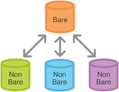

Python at CASD
Datascience team
Goals
- Why use python?
- Key concepts in python
- How to use Python at CASD?
- Basic python syntax
- Python project management
- Python for data science
Why use Python?
Python is a General Purpose Language(GPL) born February 1991. In the 2010s Python became popular, driven by the growing popularity of data science.
R is a Domain-Specific language (DSL) for data analysis and visualization.
Python Key Advantages:
- Simple and readable syntax
- Cross-Platform and Versatile
- Interoperability with other languages
- Vast and mature ecosystem
- Supports Multiple Paradigms(e.g. procedural, object-oriented, functional)
Some disadvantages
- Interpreted Language: slower than complied languages(e.g. C, Go)
- Dynamically Typed: Python interpreter infers variable types automatically ⏩ Code example
- Not strongly Typed: such as Java ⏩ Code example
- Global Interpreter Lock (GIL): Threads cannot run in parallel on multiple cores
Variables are dynamically typed in python
x = 5
print(f"type of x is: {type(x)}")
# type of x is int
x = "hello"
print(f"type of x is: {type(x)}")
# type of x is str
Python is not strongly typed
# python function checks operator types
1 + "2" # ❌ TypeError: unsupported operand types (int + str)
# but some type is allowed
1 + True # ✅ 2 (True → 1)
3 * "a" # ✅ "aaa"
Key Components in a Python Project
- Python Interpreter: The core runtime that executes Python code
- Virtual Environment: An isolated environment for avoiding version conflicts between packages.
- Package Manager: Tools handle installation, upgrades, and removal of third-party libraries
- Integrated Development Environment (IDE): Environments provide code editing, linting, debugging.
- Project Structure & Configuration Files: Files like `pyproject.toml` list project author, dependencies, Licence, etc.
A Python Interpreter is :
- Bytecode Compiler: Translates .py source files into .pyc bytecode
- Stack-based Virtual Machine: Executes .pyc bytecode instructions to allow python code to have the same output across OS
- Built-in Types and Functions: Implementations of Primitive types(e.g. int, str, etc.) and functions(e.g. print, len, etc.)
- Runtime: Interfaces with the host OS (memory, file, socket, etc.)
- Garbage Collector: Cyclic garbage cleaning to free memory
- Standard Library: Module like `os`, `math`, `statistics`
Python Virtual Environment is an isolated workspace that contains its own Python interpreter and dependencies.
- Isolation: Keep dependencies for each project separate to avoid conflicts.
- Reproducibility: Freeze (pip freeze) exact versions for repeatable builds.
- Clean Environment: Avoid polluting global/system Python with project-specific packages.
- Multiple Python Versions: Different projects can use different Python versions (e.g., 3.9 vs 3.12).
Package management in Python refers to the system that handles:
- Installing, upgrading, and removing third-party libraries (a.k.a. packages)
- Managing dependencies between packages
- Ensuring version compatibility
- Popular tools: pip, conda, poetry
IDE for python:
An IDE is a software application that provides a complete set of tools for writing, debugging, testing, and deploying code faster in a single interface.
- PyCharm: Excellent code analysis, debugger, etc. Heavy on memory.
- Visual Studio Code (VS Code): Lightweight, needs to install plugins for python development
- JupyterLab: Notebook-Centric, best for data analysis, machine learning.
- Spyder: MATLAB-like interface, best for scientific computing.
Python project structure and configuration files
Anaconda in CASD:
# check if conda exist in current shell
conda --version
# enable conda cmd in powershell
conda init powershell
A Python virtual environment is :
- A Python version
- Associated libraries
as one execution environment we can use

It allows :
- isolation of dependencies between applications
- Management of the different Python versions
- Management of the different libraries versions
Two technologies to manage these environments :
- Anaconda : Windows / Linux / MacOS
- Pyenv : Linux / MacOS
conda create --name project_1 python=3.12 --offline Activation of environment :
conda activate projet_1 Installing packages in the environment
pip install package_name pip install -r requirements.txt import package_namePython specificity:
Some packages are native!
pip install syswill not work because sys is distributed with Python
How it works at CASD:

CASD specificity:
Not all packages are available on internal servers!
If a package is missing : service@casd.eu
If in doubt :
pip listconda listGestion du projet Python
Gestion du code et de l'arbre de fichier
Mon objectif est de vous convaincre que ceci :

est plus efficace que ceci :

Pourquoi ?

Règles générales :
- S'appuyer sur des templates existants
- Séparer les objectifs et les traiter de façon distinctes
- Correctement cerner les besoins
- Effectuer une conception générale en modules et sous modules qui communiquent
Git au CASD
Intérêt de Git
- Avoir différentes versions de son code en suivant les changements
- Rétablir une version antérieure en cas de bug
- Travailler de façon collaborative
- Ne pas perdre son code en cas de panne sur une machine
Principe de fonctionnement
Principe de fonctionnement
- Chaque utilisateur envoie des petites modifications à la base de code
- Il décrit sa modification dans un message
- Il envoie les modifications de façon progressive au dépot central
- Les autres contributeurs peuvent récupérer les modifications
Au CASD
- Pas de synchronisation avec un répertoire exterieur
- Les accès aux providers (Github / Gitlab) sont coupés
Au CASD
- Git est disponible et peut être utilisé localement !
- Le dépot distant est remplacé par un dépot local dans l'espace commun !
Principe du git bare
- Le repertoire bare est dans l'espace commun, il n'est pas directement éditable
- Les repertoires non bare sont dans les espaces personnels, ils sont éditables
Développer une application
Visual Studio Code
- Très nombreuses fonctions de personnalisation
- Multi-language
- Autocomplétion/sauvegarde automatique/formattage automatique
Coder en Python
app/core/functions.py :def convert(age):
if age < 18 :
categorie = '[0-18]'
elif age < 30 :
categorie = '[18-35]'
elif age < 50 :
categorie = '[36-50]'
else :
categorie = '[51-110]'
return categorie
Coder en Python
app/main.py :# Imports
import os
import sys
from app.functions import convert
# Fonction principale
def main():
print("Bienvenue !")
age_utilisateur = input("Entrez votre age : ")
categorie = convert(age_utilisateur)
print(f"Vous appartenenez aux {categorie} ans !")
# Execution du code
if __name__ == "__main__":
main()